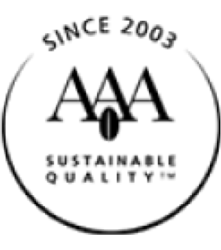
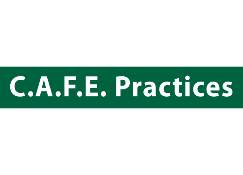

Marcos Cézar Miaki
Founder and manager. Started in coffee alongside his father, José Miaki.
Tradition, pride and love for coffee, renewed with every generation. That is how the Miaki family describes its life in coffee.
Family business · Patrocínio, Brazil

The Miaki family's bond with coffee traveled from Japan to Paraná and, in the late 1970s, moved to Patrocínio, in the Cerrado Mineiro. There, working beside his father, José Miaki, Marcos Cézar Miaki found his calling and his passion for growing coffee.
In 2000, Marcos Cézar and his wife, Brasemir, founded MC Miaki Coffee, which grew over the following years to six estates and 2,665 hectares of coffee.
It is a story of dedication built on research, technical rigor and modern technology. It has made MC Miaki a powerhouse in specialty and sustainable coffee, awarded and recognized for its professionalism, continuous improvement and consistent deliveries.
A truly family business that values its history, takes pride in its tradition and, at the same time, keeps looking ahead and innovating.
Work grounded in solid field experience and specialized consultants, constantly refining varieties, growing methods and post-harvest to produce more efficiently, always with quality.
Founder and manager. Started in coffee alongside his father, José Miaki.
Co-founder and manager of MC Miaki Coffee since 2000.
Second generation, in the daily farm and business operations.
Second generation, in the daily farm and business operations.
The joy of smelling a coffee blossom, a careful eye on every cherry, an emotion always renewed and the almost uncontainable satisfaction of seeing a coffee lot come to life.
A micro-region with unique traits, 1,250 meters high, home to most of the group's coffee fields.
The region was formed by a volcano that never fully erupted. In the process, a great amount of minerals was worked into the soil.
Over time a lake formed at the center of the volcano. The coffee grows on the inner part of the crater, high and sheltered.
Rich soil, altitude and wide temperature swings, with warm days and cold nights, make sweeter cherries.
Porta do Céu, Recanto and Shalom sit on the Chapadão, between 1,170 and 1,250 meters. Lajinha, Abadia and Bom Jardim lie between 850 and 1,050 meters.
Coffees with bright acidity and, specifically in this terroir, a subtle salty touch.
Patrocínio is part of the Cerrado Mineiro Region, Brazil's first designation of origin for coffee.
Production on every farm is part of a technology-intensive, fully traceable operation, with strict protocols for safety, social well-being and care for natural resources.
Our coffee-field neighbors
Native reserve on the properties, surrounded by native forest.
Regenerative farming: the brachiaria grass between rows goes back around the trees after mowing.
Irrigation at the right time to protect the crop in dry, hot years.
Training for tractor drivers, crop protection, boilers, confined spaces and work at height.
GPS-guided planting furrows and management driven by soil and leaf analysis.
Soil health programs and composting with our own coffee husks.
Pest and disease control with rational use of resources and minimal interference.
Recycling and treatment of waste from production and processing.
Reservoirs and planned irrigation to secure yields responsibly.
A trained, safe crew aligned with regulations, growing with the company.
The Abadia, Bom Jardim, Lajinha, Porta do Céu, Recanto and Shalom estates follow the sustainability standards of coffee's leading certifications. They deliver high-quality coffees, grown sustainably and fully traceable.

Nespresso AAASustainable quality program
C.A.F.E. PracticesStarbucksBuilt to store and prepare coffee from the group's estates, Cafeeira Porta do Céu also offers these services to other growers in the region.
Talk about storage